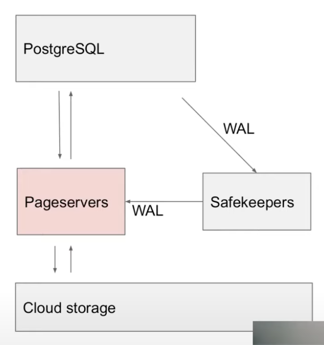
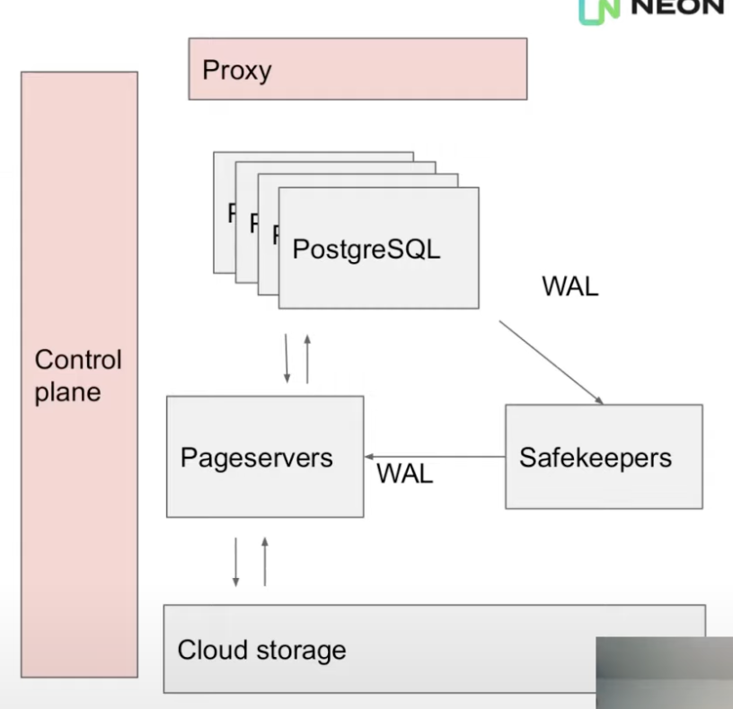
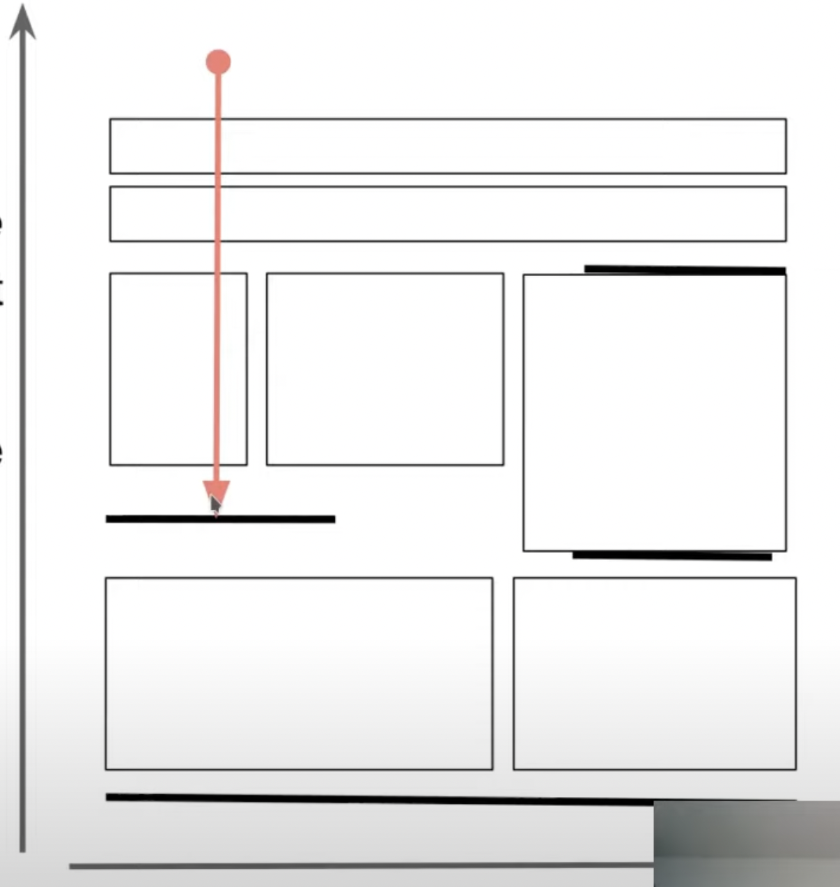
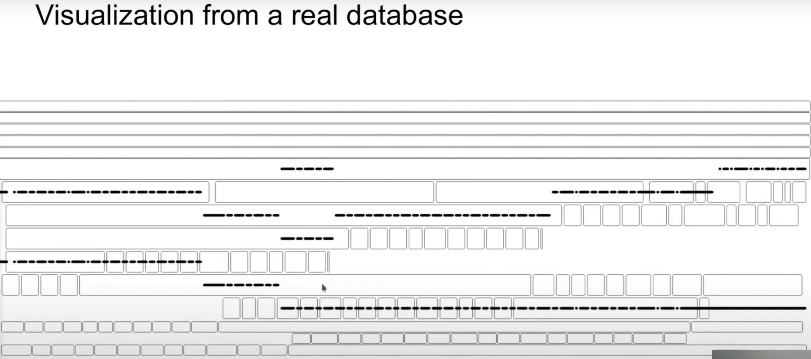

Heikki is the co-founder of Neon & a long-time PostgreSQL committer.
What is Neon?
- New storage system for Postgres
- Storage and compute are separated
- Multi-tenant storage
- One storage layer that is shared across all customers and databases
- Shared cache
- Single-tenant compute (Runs in K8s containers / VMs)
- Future plan: BYO Postgres with specific version and extensions installed
- Cheap copy-on-write branching and time-travel query
- Single-writer system i.e. single primary that’s generating log & processing updates at any given time
- Doesn’t try to solve the multi-master problem or conflicts across regions
- Postgres compatibility
- Currently, they’ve modified low-level storage in Postgres (read, write a page) so that those requests could be sent to their storage
- Other things like Planner, Executor, index types, MVCC hasn’t been changed
- Postgres Core Changes
Separation of Storage and Compute

- Compute = PostgreSQL running in a VM
- Storage = Neon storage system
- Written in Rust
- pg streams WAL to the safekeepers
- pg has support for stream replication (used to stream WAL from primary to replica) which they modified to stream the WAL to their storage system.
- pg reads pages from pageservers over network instead of local disk
- write() in pg is a no-op. They just throw the page away & it’s queried by the storage system (pageserver) using WAL if needed again
- Don’t need to do traditional checkpointing since writing is a no-op. There’s no need to flush everything to disk in Neon.
- Still let pg run checkpoint since it performs other functions than just flushing to disk but they don’t flush pages to disk.
- Local disk is only used for temporary files, sorting etc. Data is wiped when Postgres is restarted.
- Why separate compute & storage?
- Compute can be shut down completely & started quickly
- Current startup time is 4s (includes launching the VM or K8s container, setting connection to storage & replying back to client)
- Same storage can be shared by multiple read-only nodes
- Scale independently
- Cloud storage is cheap
- Neon uses S3 or S3-compatible stores
- Compute can be shut down completely & started quickly
- Q/A : On the server-side when you boot up, do you pre-fetch anything in the buffer pool?
- Nothing currently. The storage system does have its own cache so there’ll be any data in there if you recently re-started.
- There are pg extensions to pre-warm the cache that are compatible with Neon. (Probably pg-prewarm)
- But this brings in all the pages and not the ones present at last shutdown.
- Q/A : Is the server cache the WAL or materialized pages?
- Both.
Write Path
- 3 safe-keeper nodes running at all times
- Consensus algorithm based on Paxos
- Wait for majority to acknowledge txn. commit before sending acknowledgement to original client
- Ensures durability of recent txn. (This is pretty much what safe-keepers are for)
- Safe-keepers have local SSDs for storing WAL
- Detour : Postgres WAL
- Classic area-style representation
- Physical, stores updated to 8kB pages
- Mix of page images & incremental updates
- Doesn’t store statements
- No UNDO log, only REDO
- Page-servers
- Key of the storage system
- After log is durable in safe-keepers, it’s streamed to page-servers
- Processes the WAL into a format (that lets them quickly find WAL records of a particular page) which is then written into immutable files on disk
- Uploads files to cloud storage
- Keep a copy in page-server for caching
- Local SSDs for caching
- Durability
- Recent WAL is made durable in safe-keepers
- Older WAL is uploaded to cloud storage in processed format
- Page-servers are disposable
Read Path
- Page-servers
- Replays WAL to reconstruct pages on demand
- Can reconstruct any page at any point in time
- Keeps all history upto some retention period
- Instead of traditional backups & WAL archive, they store data in their own format in cloud for random access
- Request for Page from pg -> Page-server finds the last image & replays the log of that single page -> Sends back the page
- Q/A: Does the page-server wait for the safe-keeper to send it or requests it when it doesn’t have a particular log record?
- When pg requests the page at a particular LSN, if the page-server doesn’t have it yet, it’ll wait
- Q/A: Does pg maintain internally that for page 123, it expects this LSN or is it something you’re adding?
- We’ve to add that.
- Wasn’t needed for correctness. The primary node could request the latest LSN it wrote & it’d be correct but that’d cause a perf. problem because anytime you read anything from the page-server, you’d need to wait to get the latest version and most of the time there were no changes to that version.
- We had to add a cache that tracks LSN numbers of pages evicted from cache. (Last 1000 evicted pages w/ LRU)
Control Plane & Proxy

- When the client connects, it first connects to a proxy.
- Proxy intercepts the connection, performs auth & queries the control plane about the running pg instance and starts one if none is running for the client.
- VMs are shut down after 5mins of inactivity.
- Control plane starts & stops compute nodes
- Also provides the web UI & user-facing API for creating DBs, branches etc.
- Q/A: Is the proxy written from scratch or did you use pgBouncer or something similar?
- From scratch. We don’t use the proxy for connection pooling. We use it as a pass-through.
Storage Engine
-
Traditional Point-in-Time Recovery
- Take periodic backups and archive WAL to durable storage
- To restore
- Restore last backup before the point-in-time
- Replay all the log
-
Neon does this at page granularity
- Keeps backup of individual pages & stores WAL records of these individual pages
- WAL contains a mix of full page images & incremental WAL records
- pg prefers to write the full image of a page in case of bulk loading, building an index etc. otherwise it’ll mostly store the incremental updates
- To reconstruct a page version
- Find the last image of the page
- Replay all the WAL records on top of it
- To make this perform:
- Page-server reorders & indexes the WAL
- Materialize & store additional page images
- pg might have a lot of updates for a page so the page-server decides to store some additional page images so that the entire log doesn’t have to be played back when the page is queried
-
Q/A
- Do you store only the latest version of a page in the page-server or could you materialize multiple ones?
- We can reconstruct any page version upto the retention period.
- Do you do any compression on the physical storage?
- Not currently. We plan to do it.
- If you don’t set fill-factor right, that’s more just like an interaction with auto-vacuum where updates could span multiple pages & you just need the auto-vacuum to clean that up but with this system we’re keeping page versions does that mean you get a bunch of write amplification if you don’t have your fill-factor knob set right?
- fill-factor: how full pages will be packed (in table or index)
- Vacuum will create new versions of these pages but that’s okay since the WAL records are quire small so Vacuum will create new versions of these pages.
- Do you store only the latest version of a page in the page-server or could you materialize multiple ones?
-
GetPage@LSN
- When pg needs to read a page, it sends a request to page-server : GetPage(RelFileNode, block #, LSN)
- Primary node uses “last-evicted LSN” of the page
- Last-evicted LSN is loosely tracked for each page
- Read-only node can be anchored at an old LSN
- For doing a time-travel query, for eg: if you want to recover to the point where you say dropped the table then you launch a pg node and point it to the page-server & you give it the LSN that you want to read the data & pg will send all requests at that specific LSN & you can see the data as it was at that point of time
- Read-only node that follows the primary
- There’s a cache invalidation problem & if you’ve a read-only replica that’s following the primary, the read-only node will still need to follow the WAL from the primary to figure out which pages are being modified because it might’ve a version of those pages in cache & it needs to throw them away.
- From the page-server side, it looks like the read-only node requests the pages with an increasing LSN as it tracks the primary
- Primary node uses “last-evicted LSN” of the page
- When pg needs to read a page, it sends a request to page-server : GetPage(RelFileNode, block #, LSN)
Storage Engine : Key-Value Store
- Key: relation id + block number + LSN
- Relation ID tells which table or index a block belongs to
- Value: 8kB page or WAL record
- Metadata key+value pairs are stored for tracking things like relation size
- Q/A : What’s special about the multi-attribute key
- We’re doing range queries when you request a page at particular LSN. We need to find the last version of the page & it’s not a point lookup.
- The LSN no. keeps incrementing as we digest new WAL. We don’t replace the old value. We add to it & preserve the history too.
- Inspired by LSM
- Immutable files
- WAL is buffered in memory (in a BTree)
- When ~1GB of WAL has accumulated, it’s written out to a new layer file (similar to an SSTable in LSMs)
- Existing layer files are never modified
- Old files can be merged & compacted, by creating new files and deleting old ones
- All files are uploaded to cloud storage
- And downloaded back on-demand, if missing locally
Why not use an existing LSM implementation?
- Need to access history
- Used RocksDB in a earlier prototype & use the block number + LSN as the key
- Didn’t behave very well since when you keep accumulating new versions of a page, you insert new key-value pairs but when you do compaction, you move those existing keys to the next level & so on but we didn’t want to do that since we’re not going to modify those keys & there’s never any tombstone since we don’t remove anything. Write amplification was quite bad with this.
- Many LSM tree implementation have support for snapshots and the capability to read older versions of key value pair & they typically do that for MVCC & Snapshot Isolation but they don’t really expose the functionality. Many of them wouldn’t allow using our LSN number or they’d only allow you to take a snapshot & then read all of the data but it wouldn’t allow to take a snapshot in history & they’d only keep the snapshot while the system is running.
- 2 kinds of values: images & deltas (= WAL records)
- Need to control materialization
- Some implementations allowed hooking into the compact/merge operation & re-write some of the keys at that point but not all of the keys.
- Upload/download from cloud storage
- Branching for cheap copy-on-write branches
- This might’ve worked with other stores since it’s implemented at a higher level in our storage engine.
- We create a new storage for each branch & if you fall to the bottom of that storage w/o finding a version of that page, you look at the parents.
- Written in Rust or another memory-safe language
- Since our storage system is multi-tenant, the buffer cache is shared across different DBs belonging to different customers & we don’t want to have a segfault or leak data from one DB to another.
- We already have WAL & many key-value stores come with a WAL which we don’t need
Storage Format

- Consists of immutable files called layer files
- 2 kinds of layer files
- Image layer: contains a snapshot of all key-value pairs in a key-range at one LSN
- Created in background to speed up access and allow garbage collecting old data
- Image layer creation every ~20 seconds
- Delta layer: contains all changes in a key and LSN range
- If a key wasn’t modified, it’s not stored
- Incoming WAL is written out as delta layers
- Image layer: contains a snapshot of all key-value pairs in a key-range at one LSN
- 2-D storage
- X/Y : block ID/LSN
- Rectangles are delta layers
- Horizontal bars are image layers
- Each file is roughly the same size (~1GB which seems pretty good for dealing w/ cloud storage)
- Search
- To re-construct a page version, GetPage@LSN needs to find the last image of the page & all WAL records on top of it
- Search starts at the given block # and LSN, visit layers (downwards) until you find an image
- Delta layers may contain images
- Search stops at image layers
- Search is downwards. Look into the layer file & collect the WAL records for the particular key (if any) and so on until we hit the image layer which contains images of all the pages in the key-range.
- We’ve the last image & the WAL records now which can be replayed
- If a full image is found in the delta layer, we can stop the search earlier
- To re-construct a page version, GetPage@LSN needs to find the last image of the page & all WAL records on top of it
- Processing incoming WAL
- New delta layers are added to the top
- Logs are re-ordered and stored in their format for faster lookups
- Compaction
- Re-shuffles data in delta layers that contain all of the changes for a larger LSN range but smaller key- range
- For better locality in searches
- Since you’ve fewer files & don’t need to visit too many layers
- Might’ve got similar benefit with something like a bloom filter (but isn’t implemented yet)
- To aid in garbage collection (of frequently updated parts)
- For better locality in searches
- Mentioned that they aren’t entirely sure about compaction for their use-case yet
- Re-shuffles data in delta layers that contain all of the changes for a larger LSN range but smaller key- range
- Garbage Collection
- Removes old layer files that aren’t needed anymore
- Someone at Neon wrote a tool to visualise the cluster:
 - Branching
- Neon supports cheap, copy-on-write branches & this is how they do backups.
- When you read a key on the child branch & it’s not found, continue to read it from the parent at the branch point.
- Open questions for Neon
- When to materialize pages pre-emptively?
- We don’t need to materialize until the compute requests the page.
- If you’ve a workload that doesn’t fit into the cache in pg then you’d keep frequently requesting pages it wrote a while ago & it’d affect your latency if we need to do a replay at that point. (It takes a few ms to collect the records & do the replay)
- They haven’t solved the problem of when they should request a page pre-emptively.
- Q/A
- When you decommission the compute layer every 5 mins, do you signal the page-server to cleanup the data?
- We don’t currently.
- How do compute servers know which page-servers to read from?
- The control plane keeps track of this. There is currently only 1 page-server for 1 database. It’s not currently sharded but we plan to do it in future.
- Do you find yourself more limited by network bandwidth or disk bandwidth for reading from page-servers?
- One thing we ran into was the sequential scan speed. pg relies heavily on OS cache for sequential scans so when you’re scanning it’ll request page numbers one-by-one in order. The network round-trip for each individual page made this very slow for us so we added pre-fetching support.
- In other workloads, we’ve to face the overhead of reconstructing the pages doing the WAL replay if there were a lot of changes in the page.
- If you’ve a lot of layer files, we had a dumb algorithm for keeping track of what layer files exist which consumed a lot of CPU but we’re addressing that with a different data structure there.
- When you decommission the compute layer every 5 mins, do you signal the page-server to cleanup the data?
- When to create image layers?
- When to merge delta layers?
- When to materialize pages pre-emptively?
Q/A
- What % of DBs in Neon are swapped out?
- We try to keep everything in the page-server right now. We only rely on swapping out if we have to kill the page-server and reload it. We don’t have enough data to need to swap things out. We’ve had the service running for a few months & that hasn’t been enough time to create enough data to swap anything else.
- For the compute layers, we’ve b/w 50 and 100 active computes at any given time. We’ve about 3000 registered users.
- You mentioned that it takes 4s if you’ve a decommissioned instance & you connect to it. How does this compares against serverless Postgres from Amazon?
- Amazon doesn’t scale down to 0. Don’t know how much time it takes for them to startup.
- For us, it takes ~1s to spin up the pod, few 100 ms to download a “base backup” (pg database directory w/o the data since the data is downloaded separately). We run some queries to check if pg works. We add a record to internal DB through control-plane for book-keeping to remember that we started this pod. And then there’s the round-trip latency going to the client.
- pg database directory is needed so that pg can find anything that’s not just a table or index.
- Goal is to get it down to 1s.
- Since you modified the pg storage system & pg relies on OS page cache so is there anything you had to change about the assumption that pg makes about having an OS page cache?
- The sequential scan was one thing since pg depended on OS to do the read-ahead. We don’t get the benefit of the OS page cache.